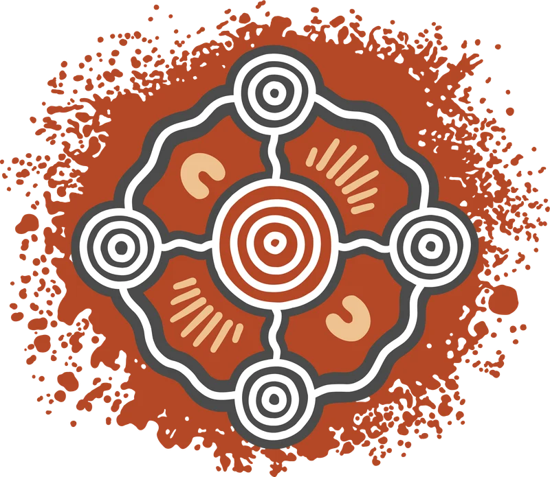
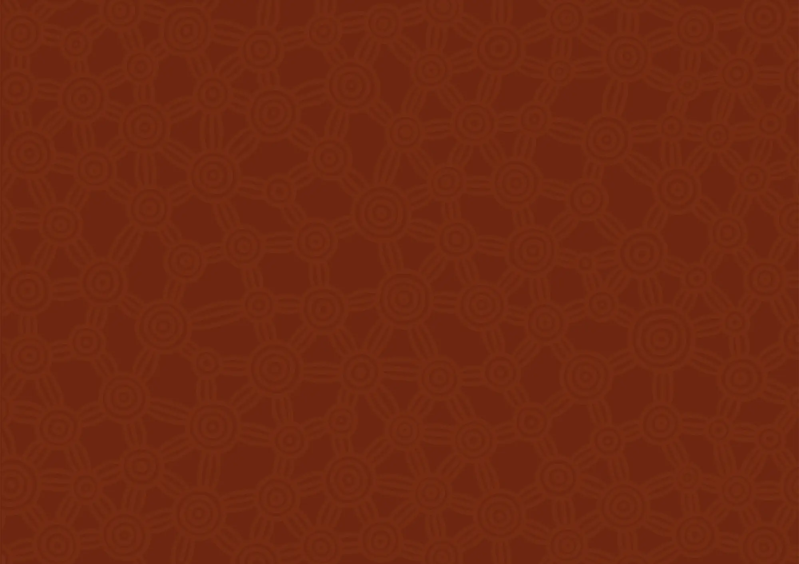
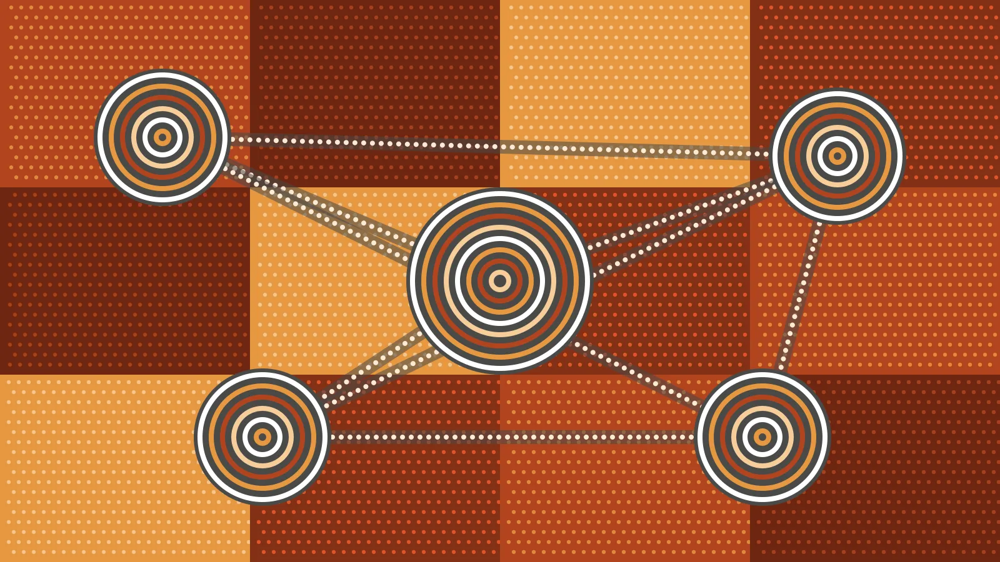

Gadigal Country · Sydney
Meet the Elders. Grow the movement. Take the Town Hall stage and march on Parliament. A 3D online game where real petition signatures move the story forward.
For young people aged 15–25. Free.

We acknowledge the Gadigal people of the Eora Nation, the Traditional Custodians of the land this game is set on, and pay our respects to Elders past and present.
The game
You start at the fire on The Block in Redfern, where Aunty Merle and Uncle Ray yarn with you about culture, Country and the people who stood up before you.
Then you head out into a real map of Sydney: Redfern, Central, Town Hall, Hyde Park and Macquarie Street, with the Harbour Bridge and the Opera House on the skyline. Win over crowds, find the spies among you, and grow the movement until the city has to listen.

How to play
Two sides
Yarn with crowds, clear rumours, question strangers, gather real signatures and lead the marches. Trust is everything.
You look blue to everyone else. Break up rallies and heckle the stage without getting caught. Voted out? You come back as blue.
Android app
Create your profile in the app the first time you play. Community servers can be added in the app.
Real voices, real change
We call on the City of Sydney Council and the NSW Parliament to create a permanent, funded Indigenous Youth Voice, led by young Aboriginal and Torres Strait Islander people and guided by Elders, with a real say in the decisions that affect our communities, our culture and our Country.
Every real signature moves the game forward for everyone. Your name and postcode are counted; your email is never published.
For schools, youth centres and mob
Each community runs its own game server and connects to the Voices Rising main server, so every group adds to one shared movement.
Name your server, play together on your own Wi-Fi or online, and keep your group's games your own.
Supporters from every community add up, and real signatures count everywhere.
Age checks, community rules, mute and report on the stage, and moderators for live events.